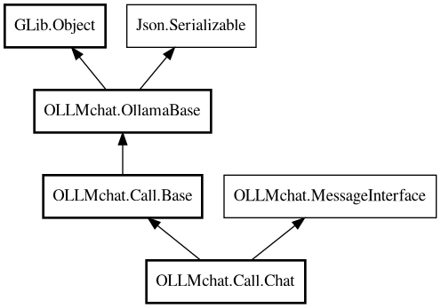

Chat
Object Hierarchy:

Description:
Chat API call implementation for sending messages and receiving responses.
Handles chat conversations with the LLM, including message history, tool calling, streaming responses, and automatic tool execution.
Manages the conversation flow and tool call recursion. Automatically executes tools when the model requests them and continues the
conversation with tool results.
Example
var call = new Call.Chat(client, "llama3.2");
call.messages.add(new Message("user", "Hello!"));
// Execute chat (handles tool calls automatically)
var response = yield call.send(call.messages);
// Access response content
print(response.message.content);
Content:
Properties:
- public Base? agent { get; set; }
Reference to the agent handler that created this chat.
- public string? format { get; set; }
- public Object? format_obj { get; set; }
JSON schema object for structured outputs. When set, this will be
serialized as the "format" field instead of the string format property. Used for Ollama's structured output feature.
- public string? keep_alive { get; set; }
- public ArrayList<Message> messages { get; set; }
- public string model { get; set; }
- public Options options { get; set; }
- public bool stream { get; set; }
- public Chat? streaming_response { get; set; }
Current streaming response object (internal use).
- public string system_content { get; set; }
- public bool think { get; set; }
- public HashMap<string,BaseTool>? tools { get; set; }
Creation methods:
Methods:
- public void add_tool (BaseTool tool)
Adds a tool to this chat's tools map.
- public override bool deserialize_property (string property_name, out Value value, ParamSpec pspec, Node property_node)
- public async Chat reply (string new_text, Chat previous_response) throws Error
Sets up this Chat as a reply to a previous conversation and executes
it. Appends the previous assistant response and new user message to the messages array, then calls send().
- public async Chat send (ArrayList<Message> messages, Cancellable? cancellable = null) throws Error
Sends messages to the chat API.
- public async Chat send_append (ArrayList<Message> new_messages, Cancellable? cancellable = null) throws Error
Appends new messages to existing messages and sends them.
- public override Node serialize_property (string property_name, Value value, ParamSpec pspec)
- public async Chat toolsReply (Chat response) throws Error
Executes tool calls from a response and continues the conversation
automatically.
Signals:
- public signal void stream_chunk (string new_text, bool is_thinking, Chat response)
Emitted when a streaming chunk is received from the chat API.
- public signal void stream_start ()
Emitted when the streaming response starts (first chunk received).
This signal is emitted when the first chunk of the response is processed, indicating that the server has started sending data back.
- public signal void tool_call_requested (ToolCall tool_call, ArrayList<Message> return_messages)
Emitted when a tool call is detected and needs to be executed.
- public signal void tool_message (Message message)
Emitted when a tool sends a status message during execution.
Inherited Members:
All known members inherited from class OLLMchat.Call.Base
All known members inherited from class OLLMchat.OllamaBase
All known members inherited from class GLib.Object
- @get
- @new
- @ref
- @set
- add_toggle_ref
- add_weak_pointer
- bind_property
- connect
- constructed
- disconnect
- dispose
- dup_data
- dup_qdata
- force_floating
- freeze_notify
- get_class
- get_data
- get_property
- get_qdata
- get_type
- getv
- interface_find_property
- interface_install_property
- interface_list_properties
- is_floating
- new_valist
- new_with_properties
- newv
- notify
- notify_property
- ref_count
- ref_sink
- remove_toggle_ref
- remove_weak_pointer
- replace_data
- replace_qdata
- set_data
- set_data_full
- set_property
- set_qdata
- set_qdata_full
- set_valist
- setv
- steal_data
- steal_qdata
- thaw_notify
- unref
- watch_closure
- weak_ref
- weak_unref
All known members inherited from interface
OLLMchat.ChatContentInterface
All known members inherited from interface Json.Serializable
- default_deserialize_property
- default_serialize_property
- deserialize_property
- find_property
- get_property
- list_properties
- serialize_property
- set_property